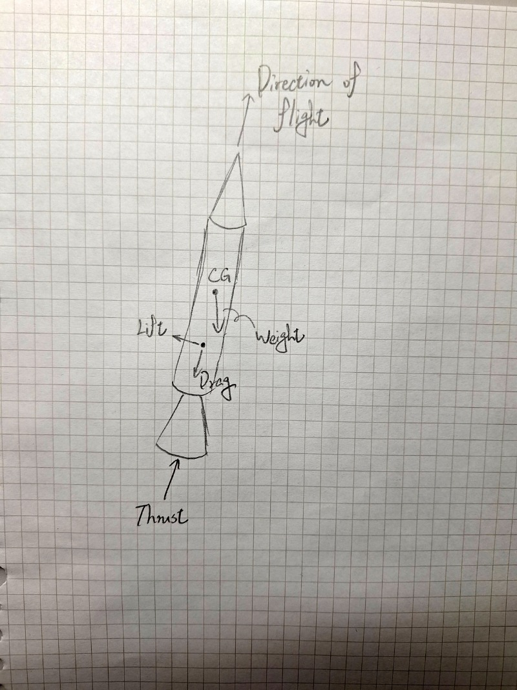

火箭噴嘴設計 <<
Previous 火箭是怎麼噴射的
火箭要噴射得上去跟自己的自身重量與地心引力的對抗，就是由耳熟能詳的牛頓第三運動定律「作用與反作用力」來解釋的!
我們常說，你往牆壁上打了一拳你的手會感覺到痛，是因為牆壁也給你了一拳讓你感受到力的反饋；你走路的時候，鞋子與地面磨擦使得你可以在路上行走，這就是「作用與反作用力」，也同樣是支持火箭升空一個重要的基礎。

這是我自己做的火箭自由體圖分析:
- Direction of flight 飛行方向
- CG(Center Gravity) 質心
- Drag 拉力
- Lift 升力
- Thrust 推力
火箭要起飛時，如果不考慮空氣阻力或是摩擦力以及結構型態分析等等問題，那麼火箭的起飛條件就是由以上的自由體圖分析做為依據。
當火箭的推力大於自身的重量以及地心引力時，火箭就會起飛離開表面。
推力可以用公式表示為：
其中：
- ˙：氣體質量流量（燃燒後的排氣速率）
- ：排氣速度
重量指火箭及其燃料的總重力，方向垂直向下，與地球的重力加速度 有關。公式為：
其中：
- ：火箭的總質量
- ：地球的重力加速度（約 ）
大氣對火箭的阻力，方向與火箭運動方向相反。可以用空氣阻力公式來描述：
其中：
- ：空氣密度
- ：火箭的速度
- ：阻力係數
- ：火箭迎風面的面積
火箭的總合力分析：
火箭的總合力可以用下列公式表示：
其中：
當火箭的推力 大於 時，火箭會加速上升。
以上就是火箭力學的基本分析，也就是為什麼我們要學會靜力學、動力學的基本能力，未來還需要學到流體力學、熱力學以及材料力學更多知識。
編輯時間:2024/12/21 3:53:53 PM
火箭噴嘴設計 <<
Previous